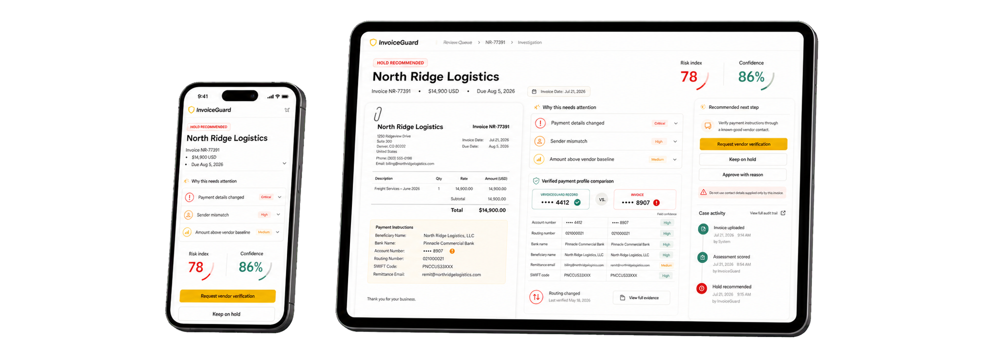
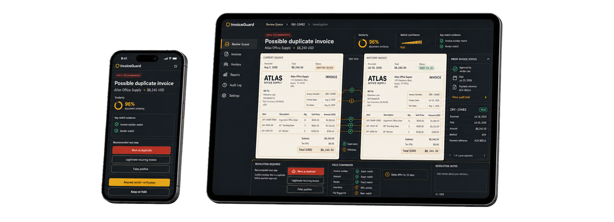
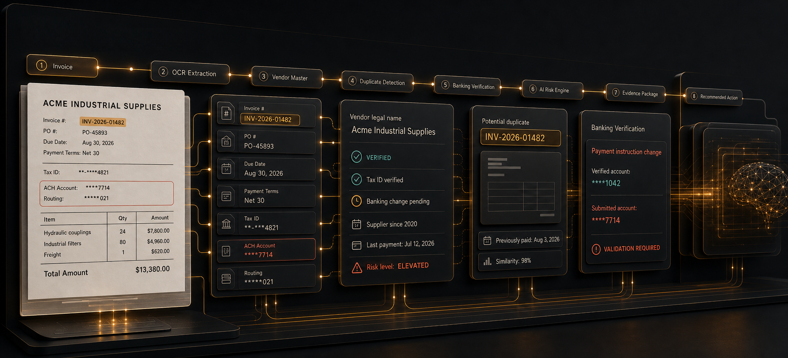
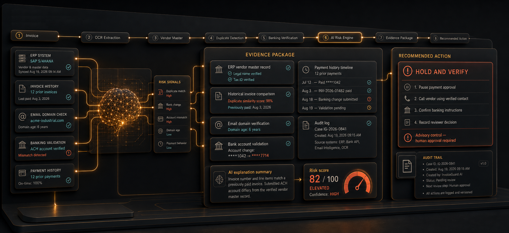

CleanContinue through the normal approval path.
INVOICE PROTECTION
In development
Invoice controls that surface risk before payment.
Evaluate invoice documents, vendor records, payment changes, and approval evidence in one review path. Give finance teams a clear risk posture, visible confidence, and a defensible next action before money moves.
Document and vendor signals Evidence-backed recommendations Finance keeps final control


Payment control
A review posture finance can understand and defend.
InvoiceGuard sits beside the systems your team already uses as an intelligence and decision-support layer, prioritizing exceptions without replacing the workflow that owns the action.
ReviewInspect a specific signal or evidence gap.
Hold & verifyPause approval while a material risk is resolved.
Operating workflow
From invoice intake to an evidence-backed approval decision.
InvoiceGuard structures the document, resolves the vendor, checks historical and payment evidence, and produces an advisory recommendation your finance team can inspect and route.
InvoiceGuard · Review Pipeline
LIVE
SYSTEM STATUS |

Extract
Structure invoice fields and preserve field-level confidence.
Match
Resolve vendor identity against trusted records and history.
Detect
Find duplicate, payment-change, amount, and context signals.
Recommend
Return a risk posture, evidence package, and next action.
Focused controls
Start with the invoice risks finance teams can act on.
The first release is deliberately narrow: defensible controls, clear evidence, and a manageable review workload instead of a broad fraud platform.
Duplicate and near-duplicate invoices
Compare invoice numbers, amounts, purchase orders, line items, document fingerprints, and prior payment status.
Changed payment instructions
Show a masked old-versus-new comparison and require verification through a previously trusted vendor contact.
Vendor and sender mismatch
Surface identity differences, unfamiliar domains, and incomplete vendor baselines in finance-friendly language.
Amount and timing anomalies
Compare the current invoice with available vendor history while keeping low-confidence cases out of the clean queue.
Evidence before automation
Give reviewers the reason, the source, and the safe next step.
A score alone is not enough. InvoiceGuard connects each recommendation to vendor records, invoice history, banking evidence, extraction confidence, and an auditable review path.
Source-linked findings
Keep every material risk connected to the document, vendor record, or historical comparison that produced it.
Safe verification path
Direct payment-change checks to a previously trusted contact instead of the contact information on the suspicious invoice.
Auditable ownership
Record who reviewed the invoice, what evidence they used, and how the exception was resolved.
LIVE
SYSTEM STATUS |

Fits the current stack
Bring signals in. Send decisions back where work happens.
InvoiceGuard is designed to complement your current systems. Start with files or APIs, then add connectors and workflow routing as the operating model matures.
Example sources
Accounting / ERPProcurementAP inboxVendor masterPayment historyWebhooks
Decision outputs
Risk postureReason codesEvidence packageReview queueAudit export
Operational flowCustomer-controlled
01
Source systemsRecords, events, documents, and evidence
02
InvoiceGuardResolve, score, explain, and recommend
03
Owned workflowReview queue, application, report, or API action
Control standard
Useful intelligence without hidden certainty.
InvoiceGuard is designed for decisions that need visible evidence, understandable limits, and accountable human ownership.
Advisory first
Recommend Clean, Review, Hold, or Escalate while authorized finance owners retain the final decision.
Confidence visible
Field extraction and record matching stay visible so uncertain evidence cannot quietly appear definitive.
Verification separated
A suspicious invoice never defines the trusted channel used to verify a material payment change.
Product roadmap In development
Focused first. Expanded with evidence.
InvoiceGuard is being designed to recommend practical invoice actions without silently blocking payments or presenting incomplete evidence as certain fraud.
- Digital invoice intake and structured extraction
- Vendor and invoice-history import
- Duplicate and payment-change controls
- Review queue, evidence detail, and audit trail
- Scanned-document OCR and mailbox intake
- Known-good vendor verification workflow
- Accounting-system and webhook integrations
- Configurable roles, policies, and thresholds
Product development
Bring disciplined invoice intelligence into your payment-control roadmap.
InvoiceGuard is in development. We are evaluating accounts-payable, controller, finance-operations, procurement, and internal-audit requirements against the initial product scope.